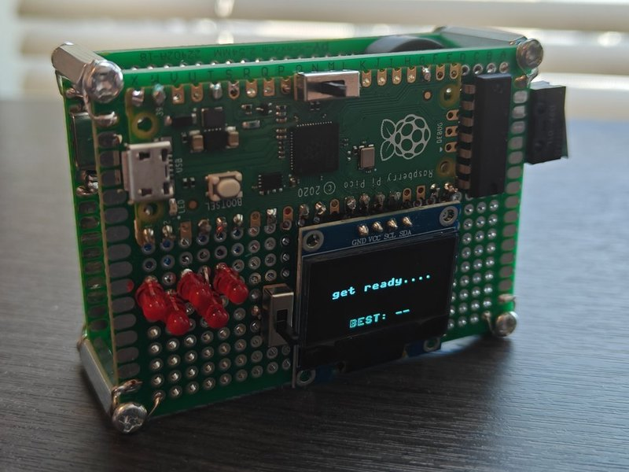

Reaction Time Game
Five-light reaction timer on an RP2040. A discrete 74HC00 SR latch debounces the button in hardware, so the firmware timestamps one clean edge.
Median 202 ms over 30 rounds · timer verified against an oscilloscope at +6.4 ms bias